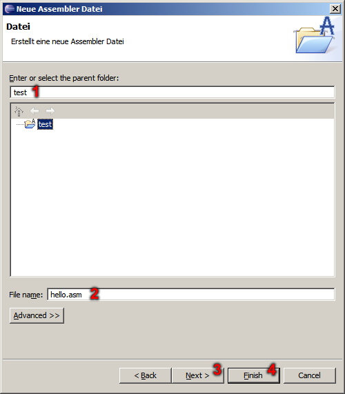
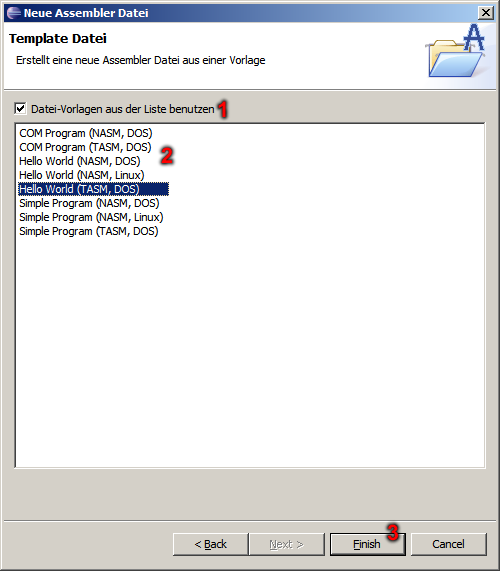

ASM Plug-In - Neue ASM Datei
In diesem Dialog können Sie festlegen, ob Sie ein ASM Projekt oder eine ASM Datei erzeugen wollen.

- Auswahl zum erweiterten Neu-Dialog zu kommen.
- Neues ASM Projekt erstellen.
- Neue ASM Datei erstellen.
- Weiter um die Eigenschaften des gewählten Eintrags festzulegen.
In diesem Dialog können Sie unteranderem den Dateiname der neuen ASM Datei festlegen.

- Das gewählte Projekt zu dem die neue ASM Datei hinzugefügt werden soll.
- Dateiname der neuen ASM Datei.
- Weiter um weitere Eigenschaften festzulegen.
- Abschließen und neue ASM Datei erstellen.
In diesem Dialog können Sie eine neue ASM Datei aus einer Vorlage erzeugen.

- Aktiviert die Vorlagen-Liste.
- Liste aller vorhandener Vorlagen.
- Abschließen und neue ASM Datei erstellen.